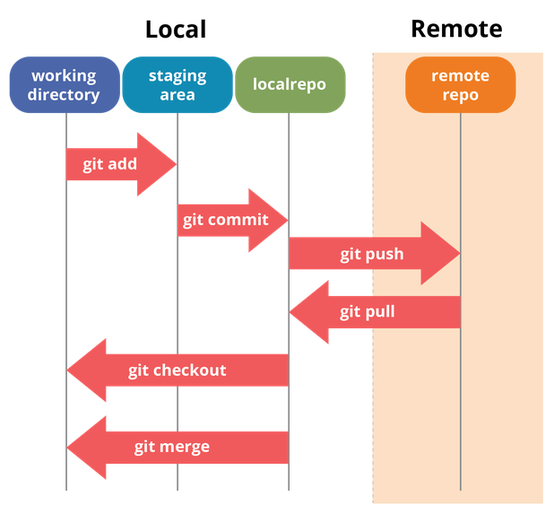

Github是通過Git工具進行專案管理、版本控制的軟體程式碼託管服務平台，由GitHub公司的開發者Chris Wanstrath、P.J.Hyett等使用Ruby on Rails編寫而成。
GitHub也提供了許多圖表功能，允許用戶概觀顯示開發者們如何在程式庫上進行工作以及軟體的開發活躍程度等等。截止到2015年。GitHub憑藉2800萬註冊用戶和5700萬程式庫的傲人成績，已然成為當今世界最大的程式碼存放網站和開源社區。

在Git工作流程中，使用者先從儲存庫下載某一版本到工作目錄，檔案修改完後，把檔案快照新增到暫存區域，執行提交後檔案就永久存到儲存庫內。
但即便是這樣的大型社區，從資訊視覺化的角度來看，GitHub提供的圖表也無法讓用戶可以一目了然。經過分析，GitHub希望使用大量的標籤選擇與大量的圖表來詳細展示開發者在程式碼貢獻、社區參與度、提交次數等方向上的數據，但由於程式庫的方向過多，導致GitHub無法在正確展示數據的同時，提供美觀、整潔的視覺化效果。針對這些問題，本組開發了Github Visualization Tool，幫助使用者更好的理解當前Github的使用者情況。
資料來源：Tensorflow
本圖表的圖例位於圖表的右上角，點擊Legend左側的方框即可彈出圖例，圖例中提供了Pull Request、Comment、Commit、Review四種類型對應在圖表中的顔色，方便使用者快速查詢。
本圖表以Repo的前100筆PR資料爲例，將PR中四種交互類型對應的數量以及各個參與者的交互次數通過旭日圖的方式展示，圖表將根據使用者目前滑鼠所在區域著重展示目前區塊的占比資訊，並淡化其他資訊。
除此之外，左上角提供了目前滑鼠所在區域的路徑，方便使用者瞭解當前的層級關係，從視覺化圖表中獲取更多的訊息。
資料來源：好食課
原文中生魚片、握壽司以及軍艦壽司用了三張分開的圖，以Donut圖呈現營養成份，但比例被圖片佔據使得要觀查各項壽司三大營養素之間的差異較難，因此將所有壽司用圓餅圖完整呈現，使讀者能在頁面上清楚理解營養素在各個壽司的占比。
1. 使用圓餅圖表示三大營養素比例：蛋白質、脂質以及碳水化合物。
2. 將三種類別分開用並排的方式，使用不同顏色凸顯同一類別各種壽司的營養素比例。
1. 考量 Eyes beat memory
同類別的圓餅圖擺成一列 (side-by-side)，讓讀者可以透過顏色面積知道各種壽司項目的比例差異。
2. 考量 Change blindness
透過滑鼠移動到圓餅圖上的營養素項目，會有動畫在選取時該營養素的面積放大，並利用Tooltip顯示營養素的實際數字，使讀者清楚知道詳細的營養素內容。
資料來源：好食課
原新聞依各種生魚片、壽司的類別以圓餅圖展示它們的營養成份，並在圖表後以文字方式補充圖表中未顯示的熱量數值資料。本圖表將壽司的熱量數值資料先轉化消耗相應熱量需要的運動時間(分鐘)，再以一張橫條圖進行呈現，比起原新聞中的只以文字來展示熱量數值資料更能讓讀者快速了解各種生魚片、壽司的熱量與人體健康的關係。
1. 使用橫條的長度來表示熱量/消耗相應熱量需要的運動時間的多寡，展示各種生魚片、壽司之間熱量/消耗相應熱量需要的運動時間的區別。
2. 將代表不同類別生魚片、壽司的橫條以不同顏色展示，讓讀者能夠更快的了解不同類別生魚片、壽司的熱量/消耗相應熱量需要的運動時間的差別。
1. 考量 Eyes beat memory
將同類別的橫條以相同顏色置於同一平面上，讓讀者不用依賴記憶去比較不同類別生魚片、壽司的熱量/消耗相應熱量需要的運動時間多寡，可以通過簡單的橫條長度來評判。
2. 考量 Change blindness
為了讓讀者可以更好的了解同類別的熱量/消耗相應熱量需要的運動時間的差別，在點擊對應類別的按鈕後，圖表會切換成只有該類別的橫條圖，聚焦於讀者所關注的內容。